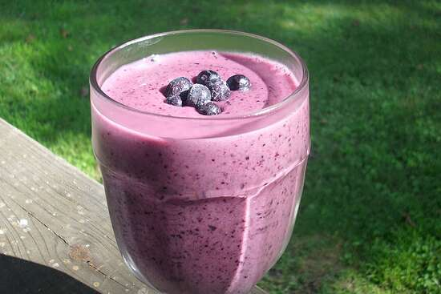

Raspberry Blackberry Smoothie

Description:
A quick and delicious smoothie
made with raspberries, blackberries, bananas
Ingredients:
- 1 small banana
- 1/2 cup blackberries
- 1 cup fresh raspberries
- 1 (6 ounce) container vanilla yogurt
- 1 tablespoon honey
- 4 ice cubes
Steps:
- Place banana, blackberries, raspberries,
yogurt, honey, and ice cubes into a blender.
Blend until smooth.